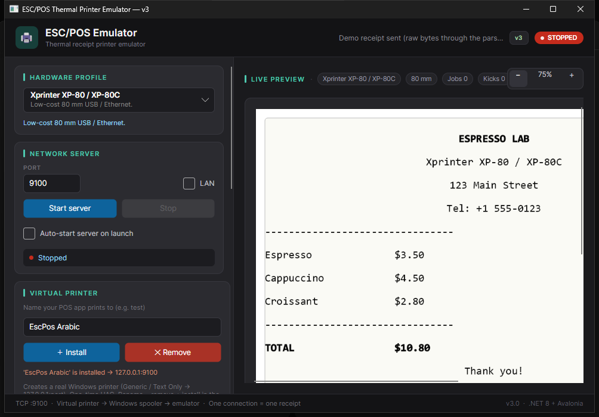

Live receipt preview
Every connection renders instantly at thermal resolution, with 25–300% zoom and job/drawer counters.
v3.1.0 · Free & open source
A Windows emulator that looks and behaves like real hardware: a live receipt preview, a named virtual printer for any POS app, full Arabic RTL support and 37 printer profiles.
Windows 10 / 11 · 64-bit · portable single file · no .NET install needed

Why this emulator
Built from real ESC/POS traffic — not a mock. Feed it bytes and see exactly what the printer would print.
Every connection renders instantly at thermal resolution, with 25–300% zoom and job/drawer counters.
HarfBuzz shaping, bidi ordering and Windows-1256 / CP720 / UTF-8 decoding — connected letters, correct order.
Install a queue with any name. Anything printed to it is forwarded as RAW bytes to the emulator.
Epson, Star, Citizen, Bixolon, Xprinter, Rongta and more — paper width, DPI, cutter and drawer support.
GS ( k QR codes, CODE39/EAN/CODE128 barcodes, GS v 0 bitmaps with band merging and halftoning.
Send the rendered receipt to any installed Windows printer — thermal, laser or Microsoft Print to PDF.
Three steps
Download the single file and launch it. No installer, no .NET runtime, no background service.
Start the TCP server, name a virtual printer and approve the one-time UAC prompt.
Select that printer in your POS app — every receipt appears in the live preview instantly.
Ready to print
Free, MIT-licensed and self-contained. About 44 MB, portable, and safe to run as a normal user — administrator rights are needed only when adding or removing the virtual printer.
Unsigned community build — if SmartScreen appears, choose More info → Run anyway.
%LOCALAPPDATA%Questions
Yes. It is open source under the MIT license — no account, no trial, no telemetry.
No. The Windows release is a self-contained single-file executable. Just run EscPosEmulator.exe.
Yes — Windows-1256, CP720 and UTF-8 with contextual shaping, bidi ordering and Arabic-capable fonts. Try the Send Arabic Demo button. If Arabic shows as dots, your POS is printing through the Windows Generic / Text Only driver, which strips non-CP437 characters before the emulator receives them.
If the app can print to a Windows printer, or can send RAW ESC/POS to a network printer on port 9100, it works. Point it at the virtual printer or at 127.0.0.1:9100.
Yes. Pick any installed Windows printer under Forward to a real printer and click Print Receipt — thermal, laser or Microsoft Print to PDF.
In %LOCALAPPDATA%\EscPosEmulator\settings.json. Delete the file to reset everything.